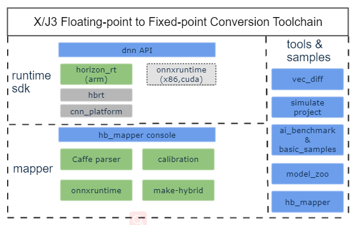
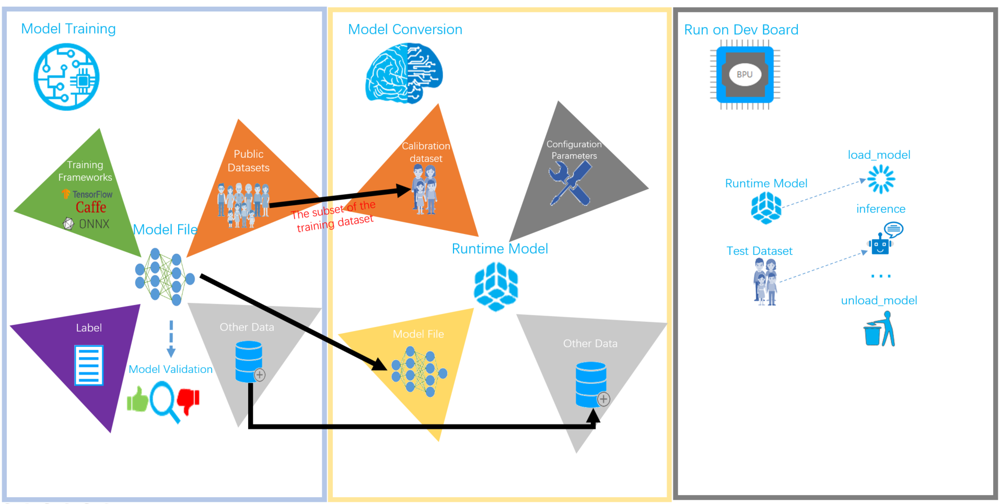

1. About The Toolchain
1.1. Overview
Horizon’s ASIC 1 Toolchain (hereafter referred to as the toolchain), as a complete set of artificial intelligence edge algorithm solution, can help users’ quickly ASIC deployment and algorithm model development. The toolchain consists of components e.g. model conversion, embedded operating environment. Please refer to below logic diagram:
As shown above, the mapper component provides model conversion capacity. Users can obtain floating-point model (hereafter as the FPM 2) from open source deep learning (hereafter as DL) frameworks and convert the FPM into Horizon’s ASIC supported heterogenerous model (hereafter referred to as the HGM 3).
While the runtime sdk component serves as the HGM runtime library. The present release version can only support ARM architecture.
1.2. Workflow Diagram
Below diagram displays the basic workflow of the toolchain:
Prerequisites refers to the process to install the dependencies of model conversion and application development. It is ONLY required when you use the toolchain for the very first time. Please refer to the Prerequisites chapter for more details.
Model Training refers to the process of obtaining your available model using open source DL frameworks, e.g. TensorFlow, PyTorch and Caffe etc. The trained model can serve as the input of the model conversion stage. As the toolchain does NOT provide any model training related libraries or tools, information of the open source DL frameworks supported by the toolchain please refer to the instructions in the Model Conversion chapter.
Model Conversion refers to the key stage to convert the model training stage trained FPM into the hybrid HGM that can run efficiently on Horizon’s AI ASIC platform by means of optimizing model structure, calibrating and quantizing the model. To validate the availability of the HGM, the toolchain also provides performance analyzing, accuracy analyzing, debugging tools and offers some very constructive suggestions. Please refer to the Model Conversion chapter for more information.
Custom OP Development is an optional stage to deal with those OPs which cannot be supported by the toolchain. Please ignore this chapter if there isn’t any unsupported OPs. Please refer to the Custom OP Development chapter for more information.
Application Development refers to AI Toolchain’s ability to support application development in embedded environment. More information about application development please refer to Application Development.